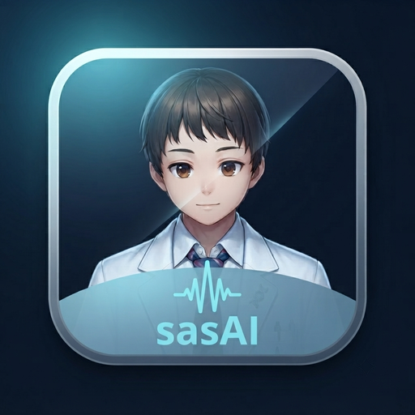

sasAI Quick Start
sasAI 快速入門
Everything a first-time user needs, one small step at a time — each step shows a picture of what you will see.
第一次用會需要知道的事，一次一小步，每一步都附上你會看到的畫面。
★Start here: your first result in 3 minutes從這裡開始：3 分鐘看到第一個結果
No data of your own yet? Use our sample file. A computer made this curve from perfectly uniform spheres, so we know the right answer: a radius of 60 Å.
手邊還沒有自己的數據？用我們準備的範例檔。這條曲線是電腦用完全均勻的球體算出來的，所以我們知道標準答案：半徑 60 Å。
Save the sample file
存下範例檔
Click the button and keep the file where you can find it again, for example on your Desktop. It is a small text file with 90 points: q, I(q) and the error of each point.
按下按鈕，把檔案存在你找得到的地方，例如桌面。它是很小的純文字檔，共 90 個點：q、I(q)，還有每個點的誤差。
Open sasAI and click Load Data…
打開 sasAI，按 Load Data…
Choose the file you just saved. Your curve appears on the plot as dots, and the Batch tab (top left) opens with the file ticked. Leave it ticked.
選剛剛存的檔案。曲線會以點的形式出現在圖上，左上角的 Batch 分頁也會打開，檔案已經打勾。保持打勾就好。
Click ▶ Auto-Fit and describe the sample
按 ▶ Auto-Fit，描述樣品
A window asks you to describe your sample. Type (or copy) this line, then click ✓ Use this:
會跳出一個視窗，請你描述樣品。輸入（或複製）下面這一行，再按 ✓ Use this：
Uniform spheres in D2O, SANS - particle radiusPlease use exactly this line, so that your result matches the one below. One line about what the sample is and what you want to know is all sasAI needs; without a question it has to guess what to answer.
請照抄這一行英文，結果才會和下面寫的一樣。sasAI 只需要一行：樣品是什麼、你想知道什麼；沒有寫問題的話，它只能自己猜要回答什麼。
Wait about a minute
等大約一分鐘
The Flow tab on the right shows each stage as it runs. On our test computer this took about a minute; an older laptop may need a few. STOP cancels.
右邊的 Flow 分頁會即時顯示每個階段。在我們的測試電腦上大約一分鐘；比較舊的筆電可能要幾分鐘。STOP 可以取消。
Check the answer
對答案
Four things tell you it worked. 1 SAS Model says
sphere. 2 chi2 is close to 1, between 0.7 and 1.5. 3 A line runs through the dots. 4 The small strip under the plot, (I-fit)/sigma, shows dots scattered evenly around 0.有四個地方可以確認成功了。1 SAS Model 顯示
sphere。2 chi2 接近 1，介於 0.7 到 1.5 之間。3 有一條線穿過那些點。4 圖下方的小圖 (I-fit)/sigma，點均勻散在 0 的上下。Then open the Model tab below the plot: the row
radiusshould be between 57 and 63 Å. We made the file with exactly 60 Å. The Batch tab now shows the file with its chi2 and ✓ done.接著打開圖下方的 Model 分頁：
radius那一列應該介於 57 到 63 Å 之間。這個檔案是用剛好 60 Å 算出來的。Batch 分頁這時會顯示這個檔案的 chi2 和 ✓ done。
What you just did
你剛剛做了什麼
You loaded a curve, told sasAI what you want to know, and got a number you can check. Your own data works the same way. Chapter 9 lists what to check first, and chapter 8 shows how to read the answer. Something different on your screen? See chapter 10, or click Report a problem.
你載入了一條曲線，告訴 sasAI 你想知道什麼，然後得到一個可以自己核對的數字。用你自己的數據也是同樣三步。第 9 章列出事前要檢查的事，第 8 章教你看懂答案。畫面和這裡不一樣？看第 10 章，或按 Report a problem。
Which button? Four buttons, four jobs
該按哪一個？四個按鈕，四件不同的事
| ▶ Auto-Fit | ▶ Auto-Fit | sasAI chooses the model and fits every ticked file in Batch. You only describe the sample. Start here whenever you are not sure which model fits. | sasAI 自己選模型，擬合 Batch 裡打勾的每一個檔案。你只要描述樣品。不確定該用哪個模型時，從這裡開始。 |
| >> RUN FIT | >> RUN FIT | Fits the one model you chose in the Model tab, on the file shown on the plot. Only the parameters with Fit? ticked move. Use it when you already know the model, or to fine-tune after Auto-Fit. | 擬合你在 Model 分頁自己選的那一個模型，對象是圖上顯示的那個檔案。只有 Fit? 打勾的參數會動。已經知道要用哪個模型，或 Auto-Fit 之後想再微調時用它。 |
| Compute/Plot | Compute/Plot | Draws the chosen model with the numbers now in the table. Nothing is fitted and nothing changes. Use it to see what a value does before you fit. | 用表格裡現在的數值，把選好的模型畫出來。不擬合，也不改任何數值。想先看看某個數值會長什麼樣子，再決定要不要擬合時用它。 |
| Web Search | Web Search | A switch, not a button. On: sasAI looks up papers about your sample, and the assistant may search the web. Off: nothing you describe or type is sent to a search site. It is on again each time you open sasAI. | 這是開關，不是按鈕。開：sasAI 會查你樣品的相關文獻，助理也可以上網查。關：你描述或輸入的內容都不會送到搜尋網站。每次打開 sasAI 都會回到「開」。 |
Chapter 1 explains the difference in detail.
第 1 章有更詳細的比較。
1What each button does每個按鈕在做什麼
Double-click the sasAI icon on your desktop. This window opens — the numbers match the list below. Here it is after the sample file of “Start here” has been fitted.
在桌面上按兩下 sasAI 圖示，會打開這個視窗——圖上的數字對應下面的表格。這張圖是「從這裡開始」的範例檔擬合完之後的樣子。
| 1 | Load Data… | Load Data… | Open your measurement file (.dat .abs .txt .xml .h5). | 開啟你的量測資料檔（.dat .abs .txt .xml .h5）。 |
| 2 | ↻ Restart | ↻ Restart | Clear everything and start a new sample. | 全部清掉，換一個新樣品。 |
| 3 | Batch · AI Config · Report · 🔑 Keys | Batch · AI Config · Report · 🔑 Keys | Batch: the files you loaded. When you click Auto-Fit, the ticked files are fitted: one ticked file is a normal fit, several are a batch. AI Config: settings for the AI, voice and Telegram. Report: write and save the report. Keys: API keys and tokens, kept only on this computer. | Batch：你載入的檔案。按 Auto-Fit 時，會擬合打勾的檔案：只勾一個是一般擬合，勾多個就是批次。AI Config：AI、語音和 Telegram 的設定。Report：產生並儲存報告。Keys：API 金鑰和 Token，只存在這台電腦。 |
| 4 | AI: | AI: | Which AI answers. Built-in is the AI on your own computer. Under it: SAS Model (the model sasAI chose) and chi2 (how closely it fits — near 1 is best). | 由哪個 AI 回答。Built-in 就是你自己電腦上的 AI。下面的 SAS Model 是 sasAI 選的模型，chi2 是擬合的好壞（越接近 1 越好）。 |
| 5 | I(Q) / Fit · P(r) | I(Q) / Fit · P(r) | The plot: your data (dots) and the fitted model (line). The P(r) tab shows the distance distribution. | 圖：你的數據（點）和擬合出的模型（線）。P(r) 分頁顯示距離分布。 |
| 6 | ▶ Auto-Fit | ▶ Auto-Fit | The main button: sasAI picks a model and fits it for you. >> RUN FIT fits a model you chose yourself, STOP stops. The same row also has Web Search (a switch: may sasAI use the internet?), Compute/Plot (draw a model without fitting) and Export (save results as CSV, DAT or JSON). | 最主要的按鈕：sasAI 幫你選模型、做擬合。>> RUN FIT 用你自己選的模型擬合，STOP 停止。同一列還有 Web Search（開關：sasAI 可不可以上網）、Compute/Plot（只畫模型、不擬合）和 Export（把結果存成 CSV、DAT 或 JSON）。 |
| 7 | Model · Fit Options · Polydispersity · Magnetism · Combine Models | Model · Fit Options · Polydispersity · Magnetism · Combine Models | Choose and adjust a model by hand — for experienced users. | 自己選模型、調參數——給有經驗的使用者。 |
| 8 | Flow · S-EVO · KB · Refs · Display · Fit Log | Flow · S-EVO · KB · Refs · Display · Fit Log | Flow: the analysis stages, live. S-EVO: sasAI's growing knowledge library. KB: your past fits. Refs: literature for this sample. Display: font sizes. Fit Log: every fitting step. The row of tabs scrolls: use its small arrows to reach the last ones. | Flow：分析各階段的即時進度。S-EVO：sasAI 越用越豐富的知識庫。KB：你過去的擬合。Refs：這個樣品的相關文獻。Display：字體大小。Fit Log：每一步擬合的紀錄。這一排分頁可以捲動，用旁邊的小箭頭切到最後幾個。 |
| 9 | Report a problem | Report a problem | Tell the sasAI team what went wrong — your log is attached automatically. | 告訴 sasAI 團隊哪裡出了問題——你的 log 會自動附上。 |
| 10 | PicoSAS bubble | 小伐頭像 | Your AI assistant (called 小伐 in Chinese). Click it to chat. | 你的 AI 助理（英文介面叫 PicoSAS）。點它就能對話。 |
| 11 | ◢ Holographic | ◢ Holographic | The look of the window: Holographic, Dark or Light. | 視窗的外觀：Holographic（全像）、Dark（深色）或 Light（淺色）。 |
| Menus | 選單 | Project: Save Project… · Open Project… · Recall (re-verify)… Help: Quick Start Guide · Check for Updates · Contribute Knowledge… · Report a Problem… | Project：Save Project… · Open Project… · Recall (re-verify)…（儲存、開啟、重新驗證專案） Help：Quick Start Guide · Check for Updates · Contribute Knowledge… · Report a Problem…（這份說明書、檢查更新、貢獻知識、回報問題） |
Auto-Fit, RUN FIT and Compute/Plot: what is different
Auto-Fit、RUN FIT、Compute/Plot 差在哪裡
All three use the same plot and the same Model tab. They differ in who chooses the model and what gets changed.
三個用的是同一張圖、同一個 Model 分頁，差別在於誰選模型、會改動什麼。
| ▶ Auto-Fit | ▶ Auto-Fit | >> RUN FIT | >> RUN FIT | Compute/Plot | Compute/Plot | ||
| Who chooses the model | 誰選模型 | sasAI, from the data and your description | sasAI，依數據和你的描述 | You, in the Model tab | 你自己，在 Model 分頁選 | You, in the Model tab | 你自己，在 Model 分頁選 |
| Which file | 對哪個檔案 | Every ticked file in Batch (two or more ticked run one after another) | Batch 裡打勾的每一個（勾兩個以上就依序一個一個跑） | The file on the plot | 圖上顯示的那個檔案 | The file on the plot | 圖上顯示的那個檔案 |
| What changes | 會改動什麼 | Model, parameters, the answer to your question, the report | 模型、參數、你問題的答案、報告 | Only the parameters with Fit? ticked, kept between Min and Max | 只有 Fit? 打勾的參數，而且不超出 Min 和 Max | Nothing. It only draws the line | 什麼都不改，只畫線 |
| Checks the physics | 會檢查物理合不合理 | Yes: it compares models and says when a number cannot be trusted | 會：比較多個模型，也會告訴你哪個數字不可信 | No: it fits exactly what you asked for | 不會：你叫它擬合什麼就擬合什麼 | No | 不會 |
| Time | 要多久 | About a minute per file on our test computer | 在我們的測試電腦上，每個檔案大約一分鐘 | One fit, much shorter | 只做一次擬合，快很多 | Immediate | 馬上 |
A good order for your own data: Auto-Fit first. If you want to try a model of your own, choose it in the Model tab, press Compute/Plot to check the starting numbers look sensible, then >> RUN FIT. Auto-Fit always chooses its own model, so a model you set by hand is not kept when you press Auto-Fit. STOP stops Auto-Fit and RUN FIT.
用自己的數據時，建議的順序：先按 Auto-Fit。想試自己的模型，就在 Model 分頁選好，按 Compute/Plot 看看起始數值畫出來合不合理，再按 >> RUN FIT。Auto-Fit 一定會自己選模型，所以你手動設定的模型，按 Auto-Fit 之後就不會保留。STOP 可以停止 Auto-Fit 和 RUN FIT。
Web Search: what it sends, and when to turn it off
Web Search：會送出什麼，什麼時候該關掉
| On (default) | 開（預設） | During Auto-Fit sasAI looks up papers about the material it understood from your description (for example "graphite"), and the report lists them. The assistant can search the web for questions such as news, weather or a facility's instruments. | Auto-Fit 時，sasAI 會用它從你的描述理解到的材料名（例如「graphite」）去查文獻，報告會列出來。助理也可以上網查新聞、天氣、某個設施有哪些儀器這類問題。 |
| Off | 關 | Nothing you describe or type is sent to a search site. Fitting works exactly the same; the report just has no literature list. If you ask the assistant something that needs the web, it says the switch is off instead of guessing. | 你描述或輸入的內容都不會送到搜尋網站。擬合完全照常，只是報告裡不會有文獻清單。問助理需要上網的問題時，它會告訴你開關是關的，不會亂猜。 |
Turn it off for a confidential sample. Two things to know: it is on again every time you open sasAI, and it does not cover a cloud AI. If you chose Gemini, Claude or MiniMax, that AI still receives what you ask it; use the built-in AI for a confidential sample.
樣品需要保密時就關掉。有兩件事要知道：每次打開 sasAI 它都會回到「開」；它也管不到雲端 AI。如果你選的是 Gemini、Claude 或 MiniMax，那個 AI 還是會收到你問它的內容；樣品需要保密時，請改用內建 AI。
2Your AI assistant你的 AI 助理
sasAI comes with its own AI. It runs on your computer — no account, no key, no fee, and it keeps working without internet.
sasAI 內建自己的 AI，就在你的電腦上執行——不用帳號、不用金鑰、不用付費，沒有網路也能用。
Using it as a general assistant? Choose a bigger AI
要當通用助理用？請選更大的 AI
For general use — asking about anything, looking things up, long conversations — we strongly recommend a cloud AI (Gemini, Claude, MiniMax, or any provider you add yourself; see chapter 3) or a local AI of 27B parameters or more. The built-in AI only gives you the most basic, limited abilities: it reads your data, explains a result and answers simple questions, but it is not comprehensive.
當你把它當通用助理使用——什麼都問、查資料、長時間對話——我們強烈建議使用雲端 AI（Gemini、Claude、MiniMax，或你自己加入的任何業者，見第 3 章），或270 億參數（27B）以上的本地 AI。內建的 AI 只提供最基礎、有限的能力：它能讀你的數據、說明結果、回答簡單的問題，但還不夠全面。
The first time, the AI downloads by itself
第一次啟動時，AI 會自己下載
About 5 GB, once — usually 10 to 40 minutes. The bottom-right corner shows the progress. You can keep working; if you close sasAI, it continues next time.
大約 5 GB，只下載一次——通常 10 到 40 分鐘。右下角會顯示進度。你可以先開始用；關掉 sasAI 也沒關係，下次會續傳。
Ask anything
想問什麼都可以
Type your question and press Enter, or tap a suggestion. It answers in the language you write in.
輸入問題後按 Enter，或直接點一個建議。你用什麼語言問，它就用什麼語言答。
1 Suggestions 建議問題 Tap one to ask it. 點一下就會問它。 2 Question box · ➤ 輸入框 · ➤ Type, then Enter or ➤. While it is answering or analyzing, ➤ turns into a red ■: press it to stop (the analysis and the rest of the batch too). Enter still adds a message to the queue. 輸入後按 Enter 或 ➤。回答或分析進行中，➤ 會變成紅色的 ■：按下去就停止（分析和批次裡還沒跑的檔案也一起停）。這時按 Enter 仍會把訊息排進佇列。 3 🎤 Microphone 🎤 麥克風 Talk instead of typing (chapter 6). 用說的，不用打字（第 6 章）。 4 🔊 Speaker 🔊 喇叭 Read the answers aloud. 把回答唸出來。 5 EN / 中 EN / 中 Switch the answer language. 切換回答的語言。 🎧 · — 🎧 · — 🎧: you can interrupt it by talking. —: shrink back to the round picture. Typing /stopdoes the same as ■.🎧：它說話時可以直接開口打斷。—：縮回圓形頭像。打 /stop和按 ■ 一樣。6 📎 Attach 📎 附加 Give it a file or a picture. You can also paste it (Ctrl + V) or drag it into the window. 交給它檔案或圖片。也可以直接貼上（Ctrl + V）或拖進視窗。 Give it files and pictures
交給它檔案和圖片
Click 📎, paste, or drag files in. They appear above the question box (✕ removes one); type a question if you like, then send. You can send a file without typing anything.
按 📎、貼上，或把檔案拖進來。它們會列在輸入框上方（按 ✕ 可以拿掉）；想問什麼就打字，再送出。不打字直接送也可以。
Measurement data 量測數據 .dat .abs .txt .csv .xml .h5 .nxs— loaded into Batch and onto the plot. Then say “analyze”..dat .abs .txt .csv .xml .h5 .nxs——載入 Batch 並畫在圖上。接著說「開始分析」。Papers and notes 論文和筆記 .pdf .md .txt— added to your own material. Ask about them and it names the file and page. A scanned PDF (pictures of pages, no text) cannot be read yet..pdf .md .txt——加進你自己的資料。之後問它內容，它會註明檔名和頁碼。掃描的 PDF（每頁是圖片、沒有文字）目前還讀不了。Pictures 圖片 .png .jpg .webp, screenshots — it describes the picture and reads the text in it, answering your question. It takes about 1–4 minutes per picture on a laptop, and it can be wrong about details: check what matters..png .jpg .webp、螢幕截圖——它會描述圖片、讀出圖上的文字，並回答你的問題。在筆電上每張大約 1–4 分鐘，細節可能看錯：重要的地方請自己核對。Reading pictures uses the built-in Qwen3.5-4B with its vision file. On computers where it is not installed yet (usually those with 12 GB of memory or more), the first picture makes it ask you first — it says how much it needs to download (about 3.5 GB, or 0.7 GB if the 4B is already there) and waits for your “yes”.
看圖用的是內建的 Qwen3.5-4B 和它的視覺檔。還沒裝的電腦（通常是 12 GB 以上記憶體的），第一次傳圖片時它會先問你——告訴你要下載多少（約 3.5 GB；已經有 4B 的話約 0.7 GB），等你說「要」才下載。
When it is not sure what you mean, it asks
它不確定你的意思時，會先問你
Before acting, it reads what you are asking for. If it cannot tell whether you want an analysis started, it asks instead of guessing. Questions that merely contain the word “analyze” no longer start an analysis, and writing, translating or general questions are not sent to your data. Reading your message takes a few extra seconds.
動手之前，它會先讀懂你要什麼。分不出你是不是要它開始分析時，它會先問你，不會用猜的。只是剛好有「分析」兩個字的問題，不會再被當成要開跑；寫東西、翻譯或一般問題也不會被拿去動你的數據。讀懂你的話會多花幾秒鐘。
“AI:” says Built-in — that's the offline AI
「AI:」顯示 Built-in——就是離線的 AI
It is already selected. Built-in answers everything — chat, analysis and reports — on your own computer.
已經預先選好了。Built-in 會回答所有事——對話、分析和報告——全部在你自己的電腦上完成。
3Change the AI model更換 AI 模型
Optional — the built-in AI is enough to start. Choose A, B, C or D.
不一定要做——內建的 AI 就夠用了。想換的話，選 A、B、C 或 D。
Which built-in AI you get
你會得到哪一個內建 AI
sasAI picks the built-in AI from your computer's memory. With 12 GB or more it is Qwen3-8B; with 8 to 12 GB it is the smaller Qwen3.5-4B. Both are instruct models: they answer directly instead of thinking at length. Below 8 GB there is no built-in AI, so you can use only a cloud AI (B or D below). These are the models that did best on SAS questions in our own tests; smaller ones answered them unreliably.
sasAI 依你電腦的記憶體挑內建 AI。12 GB 以上用 Qwen3-8B；8 到 12 GB用較小的 Qwen3.5-4B。兩個都是 instruct 模型：直接回答，不會長篇推理。低於 8 GB 沒有內建 AI，只能使用雲端 AI（下面的 B 或 D）。這兩個是我們自己測試中回答 SAS 問題最好的；更小的模型回答這類問題不可靠。
A. Another built-in model (offline)
A. 另一個內建模型（離線）
Open AI Config → Built-in LLM
打開 AI Config → Built-in LLM
Click the AI Config tab on the left. Built-in LLM is the first box.
點左邊的 AI Config 分頁，第一個方塊就是 Built-in LLM。
Pick a model 1, click Download 2
選一個模型 1，按 Download 2
Or type a name and click Search HF to find any model on HuggingFace. When the download ends, sasAI asks “Switch the AI provider to 'Built-in' now?” — click Yes.
也可以輸入名稱後按 Search HF，在 HuggingFace 上找任何模型。下載完成後 sasAI 會問「Switch the AI provider to 'Built-in' now?」（要現在切換到 Built-in 嗎？）——按 Yes。
Switch between models you already have 3 4
在已下載的模型之間切換 3 4
Pick one under Installed and click Use — no download. Bigger models are smarter but slower and need more memory: an 8B model needs about 12 GB of RAM.
在 Installed 選一個，按 Use——不用重新下載。模型越大越聰明，但也越慢、越吃記憶體：8B 的模型大約要 12 GB 的記憶體。
B. A cloud AI — Gemini, Claude or MiniMax
B. 雲端 AI——Gemini、Claude 或 MiniMax
Most cloud AIs are paid
雲端 AI 大多要付費
Most cloud AIs charge for use. The free options — Gemini's free tier and OpenRouter's free models — only allow a limited amount of use: how many requests a day and which models are capped, and the companies change these limits without notice (see their own pages: Gemini pricing, OpenRouter limits). To use the assistant for everyday, general-purpose work, we still recommend a paid cloud AI or a local model of 27B parameters or more for the best experience. The built-in AI only covers basic SAS data analysis and questions and answers.
大部分雲端 AI 都要付費使用。免費的選擇——Gemini 的免費方案、OpenRouter 的免費模型——能用的量有限：每天可以呼叫幾次、可以用哪些模型都有限制，而且業者會隨時調整（以他們自己的說明為準：Gemini 價格、OpenRouter 限制）。要讓 AI 助理做一般用途，還是建議使用付費的雲端 AI，或 27B 以上的本地模型，才有最好的使用體驗。內建模型只提供基本的 SAS 數據分析與問答功能。
Get an API key
取得 API 金鑰
For Google Gemini, follow chapter 4. Claude: console.anthropic.com. MiniMax: platform.minimaxi.com.
Google Gemini 請看第 4 章。Claude：console.anthropic.com。MiniMax：platform.minimaxi.com。
Paste it in the 🔑 Keys tab, click Save
貼到 🔑 Keys 分頁，按 Save
Pictures in chapter 4, steps 4–5.
圖片在第 4 章的第 4–5 步。
Choose it in the “AI:” box
在「AI:」選它
Pick Gemini, Claude or MiniMax. The quick chat stays on the built-in AI; the cloud AI takes the analysis and the reports. What you send goes to that company. Your cloud AI is not one of these three? See D below.
選 Gemini、Claude 或 MiniMax。快速對話仍由內建 AI 負責；分析和報告交給雲端 AI。你送出的內容會傳到那家公司。你的雲端 AI 不是這三個？請看下面的 D。
C. Your own AI server (LM Studio, Ollama)
C. 你自己的 AI 伺服器（LM Studio、Ollama）
AI Config → Edge AI: type a Name, the Endpoint (for example http://localhost:1234/v1), click ↻ to list its models, choose one, click Test, then Save AI Config. Finally choose Edge AI in the “AI:” box.
AI Config → Edge AI：填 Name（名稱）和 Endpoint（例如 http://localhost:1234/v1），按 ↻ 列出它的模型，選一個，按 Test，再按 Save AI Config。最後在「AI:」選 Edge AI。
D. Any other cloud AI — OpenAI, OpenRouter, DeepSeek, Groq, Mistral …
D. 其他的雲端 AI——OpenAI、OpenRouter、DeepSeek、Groq、Mistral …
Your cloud AI is not Gemini, Claude or MiniMax? Almost every other provider speaks the same “OpenAI-compatible” language, so you can add it yourself in the Edge AI box. You need two things from the provider: an endpoint (a web address) and an API key. The example below uses OpenRouter, which has free models — the other providers work the same way.
你的雲端 AI 不是 Gemini、Claude 或 MiniMax？其他業者幾乎都用同一種「OpenAI 相容」的介面，所以你可以自己加進 Edge AI 方塊。你只需要向業者拿兩樣東西：endpoint（一個網址）和 API 金鑰。下面用 OpenRouter 當例子（它有免費模型），其他業者的做法一樣。
Get the endpoint and a key from the provider
向業者取得 endpoint 和金鑰
Sign in on the provider's website, open its keys page, create a key and copy it — most providers show it only once. The endpoint is in the table.
到業者的網站登入，打開它的金鑰頁面，建立一把金鑰並複製起來——多數業者只會顯示一次。endpoint 看下面的表。
OpenRouter https://openrouter.ai/api/v1Keys: openrouter.ai/keys. Has free models (limited requests per day). 金鑰：openrouter.ai/keys。有免費模型（每天次數有限）。 OpenAI https://api.openai.com/v1Keys: platform.openai.com/settings/organization/api-keys. Add prepaid credit first. 金鑰：platform.openai.com/settings/organization/api-keys。要先儲值。 DeepSeek https://api.deepseek.comKeys: platform.deepseek.com/api_keys. No /v1at the end. Add balance first.金鑰：platform.deepseek.com/api_keys。網址後面沒有 /v1。要先儲值。Groq https://api.groq.com/openai/v1Keys: console.groq.com/keys. Has a free tier with rate limits. 金鑰：console.groq.com/keys。有免費額度，但有速率限制。 Mistral https://api.mistral.ai/v1Keys: console.mistral.ai/api-keys. Has a free mode without a credit card. 金鑰：console.mistral.ai/api-keys。有免刷卡的免費模式。 The addresses in the middle column go into the Endpoint box; opening one in a browser shows an error page, which is normal. Prices, free allowances and model names change often — trust the provider's own page over this table. Another provider not listed? Its documentation calls it “OpenAI-compatible” and gives a “base URL”: that is the endpoint.
中間那欄的網址是要貼進 Endpoint 欄位用的；在瀏覽器裡直接打開會看到錯誤頁，這是正常的。價格、免費額度和模型名稱常常變動——以業者自己的頁面為準。表裡沒有的業者？它的文件會寫「OpenAI-compatible」並給一個「base URL」：那就是 endpoint。
AI Config → Edge AI: type a Name and the Endpoint 1 2
AI Config → Edge AI：填 Name 和 Endpoint 1 2
Click the AI Config tab on the left; Edge AI is the box with these fields. In Name type any name you will recognise, for example OpenRouter. A new name adds a new entry; pick an old name from the list to load it again; the red ✖ removes the entry. In Endpoint paste the address from the table.
點左邊的 AI Config 分頁，有這些欄位的就是 Edge AI 方塊。在 Name 填一個你認得的名字，例如 OpenRouter。填新名字就是新增一筆；從清單選舊名字就是重新載入它；紅色的 ✖ 會刪除這一筆。在 Endpoint 貼上表裡的網址。
Paste the Key, click ↻, choose a model 3 4
貼上 Key、按 ↻、選一個模型 3 4
The key goes into the Key field of this same box — not into the 🔑 Keys tab. Then click ↻: sasAI asks the provider for its list of models and fills the Model box. For OpenRouter's free models choose
openrouter/freeor any name ending in:free. If the list does not come, you can still type a model name from the provider's website into the Model box.金鑰貼在同一個方塊的 Key 欄位——不是 🔑 Keys 分頁。然後按 ↻：sasAI 會向業者要它的模型清單，填進 Model 方塊。OpenRouter 的免費模型請選
openrouter/free，或任何以:free結尾的名字。如果清單出不來，也可以把業者網站上的模型名稱直接打進 Model 方塊。Click Test 5
按 Test 5
sasAI sends the model one tiny question. Success prints “✓ … connection OK (streaming works)” and the status bar says “…: OK”. A line starting with ✗ means it failed, and it carries the provider's own message — see the table below.
sasAI 會問模型一個極小的問題。成功的話會印出「✓ … connection OK (streaming works)」，狀態列顯示「…: OK」。以 ✗ 開頭的一行表示失敗，並附上業者自己的訊息——請看下面的對照表。
Save AI Config, then choose Edge AI in the “AI:” box 6
按 Save AI Config，再到「AI:」選 Edge AI 6
Click Save AI Config, then open the AI: box and pick Edge AI. From now on the analysis and the reports use that provider; the quick chat stays on the built-in AI. To go back, pick Built-in in the same box.
按 Save AI Config，再打開 AI: 方塊，選 Edge AI。從此分析和報告都改用那家業者；快速對話仍由內建 AI 負責。想換回來，在同一個方塊選 Built-in。
Before you use one: what you send leaves this PC
用之前：你送出的內容會離開這台電腦
Your questions, sample descriptions and data summaries go to that company. Some free endpoints may keep or use what you send — read the provider's privacy page. For confidential samples stay on Built-in. Models also differ in quality: if answers get worse, switch back in the AI: box.
你的問題、樣品描述和數據摘要會送到那家公司。有些免費端點可能會保留或利用你送出的內容——請讀業者的隱私頁面。機密樣品請留在 Built-in。模型的品質也不一樣：答案變差時，在 AI: 方塊切回來。
If something fails
失敗的時候
| Authentication failed (401) | The key is wrong, expired, or belongs to another provider. Copy it again into Key. | 金鑰不對、過期，或是別家業者的。重新複製，貼進 Key。 |
| Cannot connect | The endpoint has a typo, or there is no internet. Compare it letter by letter with the table. | endpoint 打錯，或沒有網路。逐字對照上面的表。 |
| Timeout (10s) | The provider is busy. Wait a minute and click ↻ again. | 業者太忙。等一分鐘再按 ↻。 |
| No models returned | Usually a wrong ending on the endpoint (a missing or extra /v1). Fix it, or type the model name by hand. | 通常是 endpoint 結尾不對（少了或多了 /v1）。改正它，或手動輸入模型名稱。 |
| 402 / 429 in the ✗ line | The provider says you are out of credit (402) or asking too fast (429). Add credit, or wait and try again. | 業者說你的餘額用完（402）或問得太快（429）。儲值，或等一下再試。 |
4Get a Google (Gemini) API key申請 Google（Gemini）API 金鑰
Needed only if you want Google's Gemini as your AI. You need a Google account. Google's own page is the authority on the steps and on what is free; this chapter follows Google's current guide.
只有想用 Google 的 Gemini 當 AI 時才需要。你需要一個 Google 帳號。步驟和免費額度以 Google 自己的頁面為準；這一章照著 Google 目前的說明寫。
Open the API keys page and sign in
打開 API keys 頁面並登入
Go to aistudio.google.com/apikey and sign in with your Google account. The first time, Google asks you to accept its terms; read them and accept if you agree. The page you land on is titled API Keys. The Create API key button you will use in step 2 is at the top right. The list shows only the keys of projects that AI Studio knows about, so it can be empty even if you made a key somewhere else.
到 aistudio.google.com/apikey，用 Google 帳號登入。第一次使用時，Google 會請你同意它的條款；請先讀過，同意再按。你會看到標題是 API Keys 的頁面，第 2 步要用的 Create API key 按鈕在右上角。清單只列出 AI Studio 知道的專案裡的金鑰，所以就算你在別處建過金鑰，這裡也可能是空的。
Create the key
建立金鑰
A new user gets a project and a first key automatically after accepting the terms, so the page may already list one. To make one yourself, click Create API key. A box named Create a new key opens: type a name under Name your key (any name), pick a project under Choose an imported project, then click Create key. The Create key button stays grey until a project is chosen. If the project list says No Cloud Projects Available, close the box, open Projects in the left menu and click Import projects; search for your Google Cloud project, select it and click Import. Then come back to API Keys and create the key.
新使用者同意條款之後，會自動得到一個專案和第一把金鑰，所以頁面上可能已經有一把。要自己建一把，就按 Create API key。會跳出一個標題是 Create a new key 的視窗：在 Name your key 填一個名稱（隨意），在 Choose an imported project 選一個專案，再按 Create key。還沒選專案之前，Create key 按鈕是灰的。如果專案清單寫著 No Cloud Projects Available，先關掉視窗，到左邊選單的 Projects 按 Import projects；搜尋你的 Google Cloud 專案、選取它、按 Import。然後回到 API Keys 建立金鑰。
Copy the key
複製金鑰
Copy the key from the page. Treat it like a password: never post it, e-mail it or put it in a document you share. Anyone who has it can use your Google quota.
從頁面上把金鑰複製起來。把它當成密碼：不要貼在網路上、不要用 email 傳、也不要寫進會分享出去的文件。拿到它的人就能用掉你的 Google 額度。
Paste it in sasAI: 🔑 Keys → Gemini API key → Save
貼到 sasAI：🔑 Keys → Gemini API key → Save
In sasAI, open the 🔑 Keys tab. Under AI providers, paste the key into Gemini API key 1 and click Save 2. The label next to the box changes from empty to saved, and the box is cleared on purpose: a saved key is never shown again.
在 sasAI 打開 🔑 Keys 分頁。在 AI providers 底下，把金鑰貼到 Gemini API key 1，按 Save 2。方塊旁的標籤會從 empty 變成 saved，方塊本身會清空，這是刻意的：存好的金鑰不會再顯示出來。
First picture: the key pasted, before Save. Second picture: after Save. The key in these pictures is a made-up example.
第一張：貼上金鑰、按 Save 之前。第二張：按 Save 之後。這些圖裡的金鑰是自己編的範例。
Choose Gemini in the “AI:” box
在「AI:」選 Gemini
Done. To pick a Gemini version: AI Config → Cloud AI → Gemini Model (gemini-2.5-flash is fast).
完成。想選 Gemini 的版本：AI Config → Cloud AI → Gemini Model（gemini-2.5-flash 比較快）。
Before you send unpublished data
送出未發表的數據之前
With a free Gemini key, Google may use what you send to improve its products, and asks users not to send sensitive or confidential information. For confidential samples, stay on Built-in.
用免費的 Gemini 金鑰時，Google 可能會用你送出的內容來改進它的產品，也要求使用者不要送敏感或機密資料。機密樣品請留在 Built-in。
If your key leaks, delete it on the same API keys page and create a new one.
金鑰如果外洩：到同一個 API keys 頁面刪除它，再建一把新的。
5Telegram: use sasAI from your phoneTelegram：用手機操作 sasAI
Talk to sasAI from your phone: ask questions, send it a data file, and get the plots and a PDF report back. Think of it as a remote control for the sasAI that runs on your own computer. You need a Telegram account.
用手機和 sasAI 對話：問問題、傳數據檔給它，再收回圖和 PDF 報告。可以把它想成遙控器，遙控的是你自己電腦上的 sasAI。你需要一個 Telegram 帳號。
Three things to know before you start
開始之前，先知道三件事
- sasAI must be open on your computer. The bot is part of the program, not a service on the internet. When sasAI is closed or the computer is off, the bot says nothing. What you sent in the meantime waits at Telegram, and sasAI may answer it the next time you open the program.
- Everything passes through Telegram. Your messages, data files, plots and reports travel through Telegram's servers, and chats with a bot are not end-to-end encrypted. For a confidential sample, do not use this; use the chat window on the computer.
- The token is a password. Whoever has it can control your bot. sasAI keeps it only in the settings file on this computer (
sasai.ini, in sasAI's folder) and does not sync it. You type it in the 🔑 Keys tab.
- 電腦上的 sasAI 一定要開著。機器人是程式的一部分，不是網路上的服務。sasAI 關掉、或電腦關機時，機器人不會回話。這段時間你傳的訊息會先放在 Telegram，下次打開程式時，sasAI 可能會回覆它們。
- 所有內容都會經過 Telegram。你的訊息、數據檔、圖和報告，都會經過 Telegram 的伺服器，而且和機器人的對話沒有端到端加密。樣品需要保密的話，請不要用這個功能，改用電腦上的對話視窗。
- Token 就是密碼。拿到它的人就能控制你的機器人。sasAI 只把它存在這台電腦的設定檔裡（sasAI 資料夾裡的
sasai.ini），不會同步出去。你在 🔑 Keys 分頁輸入它。
Create your bot with @BotFather
用 @BotFather 建立你的機器人
@BotFather is Telegram's own helper for making bots. In Telegram, search @BotFather, open it and send
/newbot. It asks for a name (anything, for example My sasAI) and then a username. The username must end in bot and be 5 to 32 letters, numbers or _ (for example my_sasai_bot). If Telegram says the username is taken, try another. Tip: do steps 1 and 2 in Telegram on the same computer (the Telegram app or web.telegram.org), so you can copy and paste.@BotFather 是 Telegram 官方用來建立機器人的小幫手。在 Telegram 搜尋 @BotFather，打開它，送出
/newbot。它會先問名稱（隨便取，例如 My sasAI），再問使用者名稱。使用者名稱的結尾一定要是 bot，長度 5 到 32 個英文字母、數字或 _（例如 my_sasai_bot）。如果 Telegram 說這個名字有人用了，換一個就好。小撇步：步驟 1 和 2 直接在同一台電腦上的 Telegram（桌面版或 web.telegram.org）做，這樣才能複製貼上。This picture is drawn, not a screenshot: the real chat shows your secret token. BotFather's messages are shortened here.
這張是繪圖，不是截圖：真正的對話畫面會露出你的權杖（Token）。圖裡 BotFather 的訊息是縮短過的。
Copy the token
複製 Token
When the bot is made, BotFather sends a message with its token: digits, a colon, then a long run of letters and numbers (Telegram's own example looks like
110201543:AAH…). Copy all of it. If you ever lose it or it leaks, send/tokento @BotFather for a new one.機器人建好後，BotFather 會傳一則訊息，裡面有它的 Token：一串數字、一個冒號，再接一長串英文字母和數字（Telegram 官方的範例長得像
110201543:AAH…）。整串複製起來。弄丟或外洩的話，對 @BotFather 送出/token就能換一個新的。Paste it in sasAI: 🔑 Keys → Telegram bot token → Save
貼到 sasAI：🔑 Keys → Telegram bot token → Save
Open the 🔑 Keys tab and scroll down to Remote control (Telegram); click its title to open it. Paste the token into Telegram bot token 1 and click Save 2. The label changes from empty to saved.
打開 🔑 Keys 分頁，往下捲到 Remote control (Telegram)，點它的標題展開。把 Token 貼到 Telegram bot token 1，按 Save 2。標籤會從 empty 變成 saved。
First picture: the token pasted, before Save. Second picture: after Save. The token in these pictures is a made-up example.
第一張：貼上 Token、按 Save 之前。第二張：按 Save 之後。這些圖裡的 Token 是自己編的範例。
Turn the bot on
開啟機器人
AI Config tab → click the title Remote Control (Telegram) to open it → switch on Enable bot 1. The line under it says “✅ Bot enabled — starting on this machine.” (If no token is saved yet it says “Enabled — but no token yet. Paste a @BotFather token, then Save.”) From now on the bot starts by itself every time you open sasAI, until you switch it off.
AI Config 分頁 → 點標題 Remote Control (Telegram) 展開 → 打開 Enable bot 1 的開關。下面那一行會顯示「✅ Bot enabled — starting on this machine.」（如果還沒存 Token，會顯示「Enabled — but no token yet. Paste a @BotFather token, then Save.」）。從此每次打開 sasAI，機器人都會自己啟動，直到你把開關關掉。
The switch is off here, as you first see it.
這張圖裡開關是關著的，就是你剛打開時看到的樣子。
Message your bot to get your chat ID
傳訊息給你的機器人，取得 chat ID
In Telegram open your bot (t.me/my_sasai_bot, with your own bot's username) and tap Start, or send any message. The bot is locked until you allow your chat, so it answers with your chat ID, a number. This is its exact reply:
在 Telegram 打開你的機器人（t.me/my_sasai_bot，換成你自己的機器人使用者名稱），按 Start，或隨便傳一則訊息。你的聊天室還沒被允許之前，機器人是鎖住的，所以它會回你的 chat ID，一串數字。它的回覆一字不差是這樣（只有英文版）：
This bot is locked. Your chat ID is:123456789To unlock it, open sasAI on the PC: AI Config → Remote Control (Telegram) → paste this number into Allowed chat IDs → click Save chat IDs.(The number is an example; yours is different.) It says this once per chat each time sasAI starts. Did you miss it? Restart sasAI and write to the bot again. No reply at all usually means sasAI is not running, the bot is not switched on, or the token is wrong.
（數字只是範例，你的會不一樣。）每次 sasAI 啟動後，同一個聊天室它只會說一次。沒看到？重開 sasAI，再傳一次訊息給機器人。完全沒有回覆，通常是 sasAI 沒開、機器人沒打開開關，或 Token 不對。
This picture is drawn, not a screenshot: the real chat shows a private chat ID. The words are the ones sasAI sends.
這張是繪圖，不是截圖：真正的對話畫面會露出私人的 chat ID。圖上的文字是 sasAI 實際送出的內容。
Paste the chat ID, click Save chat IDs
貼上 chat ID，按 Save chat IDs
Back in sasAI, in the same box: paste the number into Allowed chat IDs 2 and click Save chat IDs 3 (picture in the step before). To let several people in, write their IDs with commas between them. sasAI restarts the bot, checks the token with Telegram and says “✅ @your_bot running — locked to 123456789”. Now only the chats on the list can use your bot; anyone else gets no answer at all. If it says “⚠ Telegram rejected the token”, the token is wrong: paste it again in 🔑 Keys.
回到 sasAI，同一個方塊：把那串數字貼到 Allowed chat IDs 2，按 Save chat IDs 3（圖在上一步）。想讓好幾個人用，就把他們的 ID 用逗號隔開。sasAI 會重新啟動機器人、向 Telegram 確認 Token，然後顯示「✅ @你的機器人 running — locked to 123456789」。從現在起，只有名單上的聊天室能用你的機器人；其他人完全收不到回應。如果顯示「⚠ Telegram rejected the token」，表示 Token 不對：到 🔑 Keys 重新貼一次。
Use it
開始使用
Just write to it, as in the chat window on the computer (chapter 2). To analyze data: send your data file as a file (📎 → File). sasAI answers “✅ Loaded “name” (90 pts) into Batch. What next?” (in the language of your Telegram app: any Chinese app language gets Traditional Chinese, everything else English) with buttons under the message. Tap ▶ Auto Fit (or write analyze). While it works, Telegram shows typing… under the bot's name. Afterwards ask send the plot: you get the fit picture (and the P(r) picture when the data supports one). Ask for a PDF report: you get one PDF file. A copy of the plots and the report is also kept in the
reportsfolder of sasAI on the computer.Sending the data file from an Android phone. The bot cannot open your phone's file picker for you: you pick the file in Telegram, then send it to the bot's chat. The names of the menu items can differ a little between Telegram versions. Way 1: in the bot's chat tap 📎 → File, then tap Browse (the button that opens Android's own file picker) and look in Downloads or Internal storage; the picker does not filter by type, so
.datand.ABSfiles are listed. Way 2: open your phone's Files app, press and hold the data file, tap Share, choose Telegram, then choose the bot's chat. Way 3: if the file is on your computer, drag it into the bot's chat in Telegram on the computer (the same Telegram account). If the file list inside Telegram's File tab shows images and music but not your data file, that is Android hiding files that are not pictures, video or music from apps: use Way 1 or Way 2. A file that another app keeps in its own private folder cannot be seen by Telegram; export or save it to Downloads first.Buttons. Under its answers sasAI shows the buttons that make sense at that moment, so you do not have to find the right words. No data yet: 📤 Upload data. A file is loaded: ▶ Auto Fit, 📈 I(Q) plot, 🔧 Q range. After a result: 📋 Results, 📈 I(Q) plot, 📉 P(r) plot (only when the data supports one), 📄 Fit report, 🔧 Q range, ▶ Auto Fit again. While it works: ⏳ Progress and ⏹ Stop. A tap runs that function directly. Send /menu any time to bring the buttons up, /stop to stop what is running, /help (or tap 📖 Guide) to get a short explanation and the link to this chapter, /model (or tap 🤖 AI model) to choose which AI answers: the built-in one, your own endpoint, or a cloud service whose key you saved, and /restart (or tap 🔄 Restart) to start over: it clears the loaded files, the results and the conversation after you confirm (your files on the computer stay). If sasAI cannot tell what you mean, it shows the buttons instead of guessing. 🔧 Q range shows the q window the fit will use for the file on screen; tap ✂ Q min or ✂ Q max to cut data points off that end (↺ gives them back), and ⚙ to choose how many points one tap moves (1, 2, 5, 10 or 20), or send two numbers such as
0.005 0.2(1/Å); ↔ Full range restores the whole measured range. Then tap ▶ Auto Fit; the window stays set for that file, as in the desktop program. A 🧊 3D Shape button appears only when your build has that feature switched on; it starts the reconstruction and sends the picture and the numbers when it is done.就直接對它說話，和電腦上的對話視窗一樣（第 2 章）。要分析數據：把數據檔以檔案方式傳給它（📎 → File）。sasAI 會回一句確認：「✅ Loaded “name” (90 pts) into Batch. What next?」（語言跟著你 Telegram App 的語言：App 是任何一種中文就回繁體中文，其他語言回英文。中文版是「已載入「檔名」（90 點）到 Batch。接下來要做什麼？」），訊息底下有按鈕。按 ▶ Auto Fit（或直接說開始分析）。它工作時，Telegram 會在機器人名稱底下顯示正在輸入…。完成後說把圖傳給我：你會收到擬合圖（數據撐得起 P(r) 的話，還會多一張 P(r) 圖）。說 PDF 報告：你會收到一個 PDF 檔。圖和報告也會留一份在電腦上 sasAI 資料夾的
reports裡。用 Android 手機傳數據檔。機器人沒辦法替你打開手機的檔案選擇器：檔案要你自己在 Telegram 裡選好，再傳到機器人的聊天室。選單名稱在不同版本的 Telegram 可能有一點差別。方法 1：在機器人的聊天室點 📎 → 檔案，再點 瀏覽（會打開 Android 系統自己的檔案選擇器），到 下載 或 內部儲存空間 找檔案；這個選擇器不會依類型過濾，
.dat、.ABS都看得到。方法 2：打開手機的檔案 App，長按數據檔，點分享，選 Telegram，再選機器人的聊天室。方法 3：檔案在電腦上的話，用電腦上的 Telegram（同一個帳號），把檔案直接拖進機器人的聊天視窗。如果 Telegram「檔案」分頁裡只看到圖片和音樂、看不到你的數據檔，是因為 Android 不讓 App 看到圖片、影片、音樂以外的檔案：改用方法 1 或方法 2。被別的 App 放在它私有資料夾裡的檔案，Telegram 看不到；請先在那個 App 裡匯出或另存到下載。按鈕。sasAI 的回覆底下，會依當下的情況顯示合適的按鈕，你不用去想該怎麼說。還沒有資料：📤 上傳數據。檔案已載入：▶ Auto Fit、📈 I(Q) 圖、🔧 Q 範圍。有結果之後：📋 數據結果、📈 I(Q) 圖、📉 P(r) 圖（數據撐得起 P(r) 才有）、📄 擬合報告、🔧 Q 範圍，還有再來一次 ▶ Auto Fit。它工作時：⏳ 目前進度 和 ⏹ 停止。按下去就直接執行那個功能。隨時送出 /menu 就能叫出按鈕，/stop 停止正在做的事，/help（或按 📖 說明書）會給你簡短說明和這一章的連結，/model（或按 🤖 AI 模型）選要用哪個 AI：內建的、你自己的端點，或是存了金鑰的雲端服務，/restart（或按 🔄 重新開始）會重新開始：你確認之後，清掉已載入的檔案、結果和對話（電腦上的檔案不會被刪）。sasAI 聽不出你的意思時，會給你按鈕，不會亂猜。🔧 Q 範圍 會顯示這次擬合要用的 Q 範圍（畫面上那個檔案）；按 ✂ Q min 或 ✂ Q max 把那一端切掉幾個數據點（↺ 還回來），⚙ 選每按一次動幾點（1、2、5、10 或 20 點），也可以直接傳兩個數字，例如
0.005 0.2（單位 1/Å）；↔ 全範圍 會回到整段量測範圍。設好後按 ▶ Auto Fit；這個範圍會跟著那個檔案，和電腦版一樣。🧊 3D Shape 按鈕只有在你這個版本開啟了這個功能時才會出現；按下去會開始重建，完成後把圖和數字傳給你。This picture is drawn, not a screenshot: the real chat shows a private chat ID. The words are the ones sasAI sends.
這張是繪圖，不是截圖：真正的對話畫面會露出私人的 chat ID。圖上的文字是 sasAI 實際送出的內容。
Analyze data from your phone: step by step
用手機分析數據：一步一步來
| 1. Send the data file | 1. 傳數據檔 | In the bot's chat tap 📎 → File and send your data file (on Android see “Sending the data file from an Android phone” above). sasAI answers “✅ Loaded “name” (90 pts) into Batch. What next?” with buttons. | 在機器人的聊天室點 📎 → 檔案，傳你的數據檔（Android 手機請看上面的「用 Android 手機傳數據檔」）。sasAI 會回「已載入「檔名」（90 點）到 Batch。接下來要做什麼？」，下面有按鈕。 |
| 2. Optional: set the fitting q range | 2. 選擇性：設定擬合的 Q 範圍 | Tap 📈 I(Q) plot first: before any fit it sends the data itself and, if the program sees a part that should be left out (a beamstop shadow at low q, Bragg peaks or a background upturn at high q), shades it, says why and offers ✅ Use the suggested range. To set it yourself tap 🔧 Q range. It shows the window the fit will use, how many points that is and how many were cut at each end. ✂ Q min / ✂ Q max cut points off that end, ↺ gives them back, ⚙ chooses how many points one tap moves, ↔ Full range restores everything. Or send two numbers such as 0.005 0.2. | 先按 📈 I(Q) 圖：還沒擬合時，它會傳數據本身的圖；如果程式看到應該排除的範圍（低 Q 的 beamstop 陰影、高 Q 的繞射峰或背景回升），會塗上顏色、說明原因，並給你 ✅ 套用建議的範圍。要自己設就點 🔧 Q 範圍。它會顯示這次擬合要用的範圍、有幾個點、兩端各切掉幾點。✂ Q min／✂ Q max 把那一端切掉幾點，↺ 還回來，⚙ 選每按一次動幾點，↔ 全範圍 全部還原。也可以直接傳兩個數字，例如 0.005 0.2。 |
| 3. Tap ▶ Auto Fit | 3. 按 ▶ Auto Fit | If sasAI does not yet know what the sample is, it asks once: “Before we start, briefly describe the sample (material, expected structure, what you want to know)?” Answer in one sentence, for example carbon powder, I want the particle size. Then it starts: “On it — analyzing “name”. One moment ⏳”. | 如果 sasAI 還不知道樣品是什麼，會問你一次：「開始前，請簡短描述這個樣品（材料、預期結構、你想知道什麼）？」用一句話回答，例如「碳粉末，我想知道粒徑」。接著它會開始：「好的，我開始自動分析「檔名」，稍等一下下 ⏳」。 |
| 4. Watch the progress line | 4. 看進度那一行 | While it works, one line is edited in place with the stage and the time so far, for example “⏳ fitting… (1:05 so far)”, and at the end “✅ Analysis done (2:10)”. Tap ⏳ Progress for the details, 📸 Current view to see what is on the computer's screen right now (while something is running it is a short animation of about ten seconds), or ⏹ Stop (or send /stop) to end it. A fit usually takes a few minutes. | 分析時，有一行訊息會原地更新階段和已經花的時間，例如「⏳ 擬合中…（已 1:05）」，結束時變成「✅ 分析完成（用時 2:10）」。按 ⏳ 目前進度 看細節，按 📸 目前畫面 看電腦螢幕上現在的圖（有東西在跑的時候，傳來的是大約十秒的小動畫），按 ⏹ 停止（或送出 /stop）可以中止。一次擬合通常要幾分鐘。 |
| 5. Read the result | 5. 讀結果 | The result message starts with the bottom line. If the data gave an answer it says what it can answer. If not, it says so plainly, then Why (in plain words) and What would help. After that come the model with how good the fit is (a good fit / an acceptable fit / a poor fit, with the reduced χ²) and the measurement warnings, which are listed but do not change the conclusion. | 結果訊息的第一行是結論。資料有答案時，它會說能回答什麼；沒有就直說沒有，接著是原因（用白話）和怎麼辦。後面是模型和擬合好壞（擬合得很好／擬合尚可／擬合偏差大，附 reduced χ²），再來是量測條件提醒——它們只是列出來，不會改變結論。 |
| 6. Ask for more | 6. 再看更多 | Under the result are buttons: 📋 Results (the message again), 📈 I(Q) plot and 📉 P(r) plot (sent as pictures; the P(r) one only appears when the data supports it), 📄 Fit report (a PDF file), 🔧 Q range to change the window and fit again with ▶ Auto Fit. 🧊 3D Shape appears only in a build that has it and only when a radius of gyration could be read from the data; it first asks how many runs (1 to 9): one run is the fastest, and from two runs on the runs can be compared with each other. | 結果下面有按鈕：📋 數據結果（再看一次這則訊息）、📈 I(Q) 圖和📉 P(r) 圖（以圖片傳來；P(r) 要資料撐得起才有）、📄 擬合報告（一個 PDF 檔）、🔧 Q 範圍改範圍後再按 ▶ Auto Fit 重新擬合。🧊 3D Shape 只有在這個版本有開放、而且資料讀得出迴轉半徑時才會出現；按了會先問要跑幾次（1 到 9）：1 次最快，2 次以上才能比較各次之間是否一致。 |
What you can send
你可以傳什麼
| A data file | 數據檔 | .dat .abs .txt .csv .xml .h5 .hdf .hdf5 .nxs, sent as a file. It is loaded into Batch and onto the plot on your computer. | .dat .abs .txt .csv .xml .h5 .hdf .hdf5 .nxs，以檔案方式傳。它會載入你電腦上的 Batch 和圖。 |
| A paper or notes | 論文或筆記 | .pdf .md, sent as a file: added to your own material, as in chapter 2. | .pdf .md，以檔案方式傳：加進你自己的資料，和第 2 章一樣。 |
| A picture | 圖片 | A photo, or a file ending in .png .jpg .jpeg .webp .bmp .gif. Write your question as the caption; the picture is read like in chapter 2 (it can take minutes). | 照片，或副檔名是 .png .jpg .jpeg .webp .bmp .gif 的檔案。把問題寫在照片的說明裡；圖片的讀法和第 2 章一樣（可能要幾分鐘）。 |
| Text | 文字 | Any question or instruction, in any language. A caption on a file is treated as a message too. | 任何問題或指令，什麼語言都可以。檔案的說明文字也會當成一則訊息處理。 |
What happens when…
遇到這些狀況時
| You write while it is still answering | 它還在回答時你又傳訊息 | It answers one message at a time. The new one waits: “(Still answering the previous message — this one is next in line.)” | 它一次只回一則。新的那則會排隊：「（還在回上一則，這則排在後面。）」 |
/stop | /stop | Stops the answer or the analysis that is running, empties the queue and replies “Stopped.” | 停止正在進行的回答或分析，清空排隊的訊息，並回「已停止。」 |
| You cannot see your data file when you pick it (Android) | 選檔案時看不到數據檔（Android） | Android hides files that are not pictures, video or music from Telegram's own file list. Tap 📎 → File → Browse, or share the file from your phone's Files app to the bot's chat (step “Use it”). | Android 不讓 Telegram 自己的檔案清單看到圖片、影片、音樂以外的檔案。點 📎 → 檔案 → 瀏覽，或在手機的檔案 App 把檔案分享到機器人的聊天室（「使用」那一步）。 |
| A file type it does not take, or a file over about 20 MB | 不收的檔案類型，或超過約 20 MB 的檔案 | “⚠ unsupported file type '.xyz'” or “⚠ file too large (Telegram caps bot downloads at ~20 MB)”. Nothing is loaded. | 「⚠ unsupported file type '.xyz'」或「⚠ file too large (Telegram caps bot downloads at ~20 MB)」。什麼都不會載入。 |
| You also use the chat window on the computer | 你同時也用電腦上的對話視窗 | The two chats mirror each other. What you write on the computer shows on the phone with a 🖥 in front, and the answers show in both places. | 兩邊的對話會互相同步。你在電腦上打的字，會在手機上出現、前面加一個 🖥，回答兩邊都看得到。 |
| Two computers run sasAI with the same bot | 兩台電腦用同一個機器人跑 sasAI | Only one may use a bot at a time. The one that notices stops, switches Enable bot off and says “⚠ Another machine is already running this bot — stopped here (only one may run). Turn it off there, then flip this switch on to run it here.” | 一個機器人同一時間只能一台電腦用。發現衝突的那一台會自己停下來、把 Enable bot 關掉，並顯示「⚠ Another machine is already running this bot — stopped here (only one may run). Turn it off there, then flip this switch on to run it here.」 |
| Somebody else finds your bot | 別人找到你的機器人 | Once your chat ID list is saved, they get no answer at all and nothing runs. (Before the list exists, anyone who writes to the bot is told their own chat ID, nothing more.) | 名單存好之後，他們完全收不到回應，也不會執行任何東西。（名單還不存在的時候，任何人傳訊息給機器人，只會被告知他自己的 chat ID，僅此而已。） |
What it cannot do
它做不到的事
- It cannot answer while sasAI is closed.
- Voice messages, video and stickers get no reply: it reads text, files and photos only.
- It takes only the file types in the table above, up to about 20 MB each.
- The report comes as a PDF. The DOCX version is only on the Report tab on the computer.
- It is as good as the AI you chose in the “AI:” box (chapter 3): a cloud AI receives what you ask, whether you ask from the phone or the computer.
- sasAI 關掉的時候，它不能回答。
- 語音訊息、影片和貼圖都不會有回應：它只讀文字、檔案和照片。
- 只收上面表格列的檔案類型，每個檔案最大約 20 MB。
- 報告只會以 PDF 傳給你。DOCX 版本只能在電腦上的 Report 分頁拿到。
- 它的聰明程度取決於你在「AI:」選的 AI（第 3 章）：選雲端 AI 的話，不管你從手機還是電腦問，雲端 AI 都會收到你問的內容。
If the token leaks
Token 如果外洩
Send /token to @BotFather and follow its questions to get a new token (the old one stops working). Paste the new one in 🔑 Keys and click Save, then click Save chat IDs in the Remote Control box: that restarts the bot with the new token.
對 @BotFather 送出 /token，照它的問題回答，拿一個新的 Token（舊的就失效了）。把新的貼到 🔑 Keys，按 Save，再到 Remote Control 方塊按 Save chat IDs：這樣機器人會用新的 Token 重新啟動。
6Voice: talk to it, and record your voice語音：用說的，並錄下你的聲紋 Windows
Speak your questions and hear the answers. In this beta, voice works on Windows; on macOS and Linux, type instead.
用說的問問題、聽它回答。這個封測版的語音功能只在 Windows 上可用；macOS 和 Linux 請用打字。
Click the microphone and talk
點麥克風，開始說話
In the chat window, click 🎤. It turns cyan while it listens — just talk, nothing to hold. Click it again to stop. The very first time it may need a minute to get ready.
在對話視窗點 🎤。聆聽時它會變成藍綠色——直接說就好，不用按著。再點一下就停止。第一次使用可能要等一分鐘準備。
Start with its name
先叫它的名字
Say “PicoSAS, …” (in Chinese: “小伐，…”). Until it knows your voice (next step), it only follows sentences that start with its name — so people talking nearby don't set it off.
說「小伐，…」（英文介面：「PicoSAS, …」）。在它認得你的聲音之前（下一步），它只聽以它的名字開頭的句子——旁邊有人說話也不會誤觸發。
Record your voice — 6 seconds, once
錄下你的聲音——6 秒，一次就好
AI Config tab → Voice box → click Enroll voiceprint (6s) 1. (Or just say or type “PicoSAS, enroll my voice”.)
AI Config 分頁 → Voice 方塊 → 按 Enroll voiceprint (6s) 1。（或直接說、或打字「小伐 錄聲紋」。）
Press OK and read the sentence shown
按 OK，唸出畫面上的句子
Recording starts when you press OK and lasts 6 seconds. Read in your normal voice, at your usual distance from the computer.
按 OK 後開始錄音，持續 6 秒。用平常的音量、平常和電腦的距離來唸。
Done: “Enrolled ✓”
完成：「Enrolled ✓」
The Voice box now says “Enrolled ✓ — hands-free accepts your voice (or the assistant's name).” It listens to you — no name needed. Your voiceprint stays on this computer. Record again any time; Clear deletes it.
Voice 方塊會顯示「Enrolled ✓ — hands-free accepts your voice (or the assistant's name).」。之後它只聽你的聲音——不用再叫名字。聲紋只存在這台電腦。隨時可以重錄；Clear 會刪掉它。
Hear the answers
聽它回答
Click 🔊 at the top of the chat window. You can interrupt it just by talking. English is spoken offline; the Chinese voice needs the internet.
點對話視窗上方的 🔊。它說話時你可以直接開口打斷。英文語音可離線；中文語音需要網路。
If it doesn't hear you well
聽不清楚你說話？
- Wrong microphone? Voice box → Microphone 2 → pick yours.
- Nothing at all? Windows Settings → Privacy & security → Microphone: turn on Microphone access and Let desktop apps access your microphone.
- Short Chinese sentences written as English? Voice language 3 → 中文.
- Want more accurate recognition? STT model 4 → medium (one-time ~1.5 GB download, a bit slower).
- 麥克風不對？Voice 方塊 → Microphone 2 → 選你要用的那一支。
- 完全沒反應？Windows 設定 → 隱私權與安全性 → 麥克風：開啟麥克風存取權和讓桌面應用程式存取您的麥克風。
- 短的中文句子被辨識成英文？Voice language 3 → 中文。
- 想要更準的辨識？STT model 4 → medium（一次性下載約 1.5 GB，會稍慢一點）。
7From your data to a report從你的數據到一份報告
The whole analysis in eight steps.
完整的分析，八個步驟。
Load your data
載入數據
Click Load Data… and choose your file. Your curve appears on the plot.
按 Load Data… 選你的檔案。曲線會出現在圖上。
Leave Web Search on
讓 Web Search 保持開啟
With Web Search on, sasAI looks up papers about your sample and lists them in the report. For a confidential sample turn it off: the fit runs the same, and nothing you describe is sent to a search site.
Web Search 開著時，sasAI 會查你樣品的相關文獻，列在報告裡。樣品需要保密就把它關掉：擬合照常進行，你描述的內容不會送到搜尋網站。
Click ▶ Auto-Fit and describe your sample
按 ▶ Auto-Fit，描述你的樣品
Write one line: what it is, the solvent, SAXS or SANS, and what you want to know. Not sure? You can leave it empty and sasAI will read the question from the data, but a line about what you want to know gives a more useful answer. Click ✓ Use this.
寫一行：這是什麼、溶劑、SAXS 還是 SANS、你想知道什麼。不確定？也可以留空，sasAI 會從數據去判斷你想知道什麼，但寫上你想知道的事，答案會比較有用。按 ✓ Use this。
Wait a few minutes
等幾分鐘
The Flow tab on the right shows each stage as it runs. STOP cancels.
右邊的 Flow 分頁會即時顯示每個階段。STOP 可以取消。
Read the result
看結果
The line on the plot is the fitted model. SAS Model shows which model sasAI chose and chi2 how closely it follows your data (near 1 is best). To learn more, click the round PicoSAS picture and ask “Why this model?”; it explains the answer.
圖上的線就是擬合出的模型。SAS Model 顯示 sasAI 選了哪個模型，chi2 顯示它和你的數據多接近（越接近 1 越好）。想知道更多，點圓形的小伐頭像，問它「為什麼選這個模型？」，它會解釋這個答案。
Report tab → Generate
Report 分頁 → Generate
Open the Report tab on the left. If you like, type your measurement conditions in Exp. conditions — anything you leave out is written as “not specified”, never made up. Click Generate.
打開左邊的 Report 分頁。想要的話，在 Exp. conditions 填入量測條件——沒填的會寫成「not specified」，絕不會編造。按 Generate。
Save the report: PDF or DOCX
儲存報告：PDF 或 DOCX
When the report appears, click PDF 3 (or DOCX for Word) and choose where to save it.
報告出現後，按 PDF 3（或 DOCX 存成 Word），選擇存放位置。
Keep your work
保留你的工作
Project → Save Project… saves the whole analysis; Open Project… brings it back. Export saves the numbers as CSV, DAT or JSON.
Project → Save Project… 會儲存整個分析；Open Project… 可以再叫出來。Export 把數據存成 CSV、DAT 或 JSON。
8Reading your result看懂你的結果
sasAI would rather say “I can't tell” than guess. Here is how to read what it tells you.
sasAI 寧可說「我看不出來」，也不亂猜。下面教你怎麼看它告訴你的話。
What the assistant tells you when the analysis is done
分析完成後，助理告訴你的結果
When you start the analysis from the chat window (say “analyze”), the answer appears in the chat by itself when it is done. If you started with ▶ Auto-Fit, open the chat and ask “What is the result?”: you get the same message. Here it is for the sample file, followed by the same sample asked for something its curve cannot give (the particle radius and the shell thickness).
從對話視窗開始分析（說「開始分析」）的話，分析完成時，答案會自己出現在對話裡。如果是按 ▶ Auto-Fit 開始的，打開對話問「結果怎麼樣？」，就會得到同一則訊息。下面是範例檔的結果，接著是同一個範例檔、但問了它的曲線給不出的東西（粒子半徑和殼層厚度）的結果。
Left: the sample, asked for the particle radius. Right: the same sample, asked for the radius and the shell thickness.
左：範例檔，問粒子半徑。右：同一個範例檔，問半徑和殼層厚度。
| Bottom line: | Bottom line:（結論） | One sentence: which quantities this data can measure and which it CANNOT resolve. Not being able to resolve one is an honest result, not a fault. The words after “for that” say what might help, for example a different measurement. | 一句話，說這份數據能量到哪些物理量、哪些量不到（CANNOT resolve）。量不到是誠實的結果，不是故障；「for that」後面的文字會告訴你可以怎麼做，例如換一種量測。 |
| Model: … (reduced χ² = …) | 模型：… (reduced χ² = …) | The model sasAI used and how closely it follows your data (near 1 is best; see “chi2 in plain words” below). | sasAI 用的模型，以及它貼合數據的程度（越接近 1 越好；看下面的「用白話看 chi2」）。 |
| ⚠ About this measurement: | ⚠ 量測條件提醒： | Things about your data or description that limit the answer. In the pictures: the material was not named, so its scattering contrast is unknown and a sphere cannot be told from a core-shell particle. The radius itself is not affected. | 你的數據或描述裡，會限制答案的地方。圖裡的例子：描述裡沒有寫材料，所以散射對比度不明，分不出球體和核殼粒子。半徑本身不受影響。 |
| • radius = 60.01 Å | • 粒徑（半徑） = 60.01 Å | One line per answered question: the number with its unit, and on the next line (↳) what it means. If the literature has a value, the line ends with ✓ consistent with literature or ⚠ differs from literature … read with care. | 每個回答得了的問題一行：數字加單位，下一行（↳）說明它的意思。如果文獻裡有這個值，這一行的最後會寫 ✓ 與文獻一致 或 ⚠ 與文獻不同 … 請斟酌。 |
| ⚠ Note: this fit's χ² is high | ⚠ 提醒：這個擬合的 χ² 偏高 | Appears only when chi2 is above 5: the model does not fully follow the data, so treat the numbers as indicative only. | 只有 chi2 高於 5 時才會出現：模型沒有完全貼合數據，數字只能當參考。 |
The last line points to the Report tab: the full report is written there when you press Generate (chapter 7).
最後一行會指向 Report 分頁：按 Generate 就會在那裡寫出完整報告（第 7 章）。
Words you may meet
你可能會看到的字眼
These phrases belong to sasAI's full written analysis, the text report that the analysis tools and the MCP server return. The chat message above is the short form of the same checks.
這些字眼出現在 sasAI 完整的書面分析裡，也就是分析工具和 MCP 伺服器回傳的文字報告。上面的對話訊息是同樣檢查的簡短版。
| systematic deviation · fit inadequate | systematic deviation · fit inadequate | The residuals show a pattern, so the model misses a feature of your curve. Look at the strip under the plot, and ask the assistant why it chose this model. | 殘差有規律，代表模型漏掉了你曲線的某個特徵。看圖下方的小圖，也可以問 AI 助理為什麼選這個模型。 |
| Self-check — this read is QUESTIONED, not confirmed | Self-check — this read is QUESTIONED, not confirmed | Independent cross-checks disagree. Treat the numbers as provisional and read the points listed under this banner first. | 幾個獨立的交叉檢查互相不一致。這些數字只能暫時參考，請先看橫幅底下列出的重點。 |
| UNIT UNVERIFIED · UNIT AMBIGUOUS · UNIT CONFLICT | UNIT UNVERIFIED · UNIT AMBIGUOUS · UNIT CONFLICT | sasAI had to guess the unit of q. A wrong guess makes every size off by a factor of 10. Put the unit in a note line at the top of your file (chapter 9) and load it again. | sasAI 只能猜 q 的單位。猜錯的話，每個尺寸都會差 10 倍。在檔案最上面加一行註解寫明單位（第 9 章），再載入一次。 |
| not on absolute scale | not on absolute scale | Your intensity has no absolute unit, so answers that need it (volume fraction, molecular weight) are left out on purpose. | 你的強度沒有絕對單位，所以需要它的答案（體積分率、分子量）會刻意不給。 |
| MW (Porod, protein-cal.) | MW (Porod, protein-cal.) | Molecular-weight lines assume a folded protein. For nanoparticles, polymers or micelles, ignore them; the volume is the meaningful number. | 分子量那幾行是假設樣品為折疊好的蛋白質。奈米粒子、高分子或微胞請忽略它們，有意義的是體積。 |
chi2 in plain words
用白話看 chi2
The Fit Log tab prints one of these words next to reduced χ², which is the same number as chi2.
Fit Log 分頁會在 reduced χ²（和 chi2 是同一個數字）旁邊印出下面其中一個詞。
| (overfit/σ high) | (overfit/σ high) | Below 0.5. The error bars are probably too large, or the fit has more freedom than the data needs. | 低於 0.5。誤差棒可能太大，或是擬合的自由度比數據需要的還多。 |
| (good) | (good) | 0.5 to 2. The model follows your data as closely as the error bars allow. About 1 is ideal. | 0.5 到 2。模型貼合你的數據，貼到誤差棒容許的程度。接近 1 最理想。 |
| (acceptable) | (acceptable) | 2 to 10. Good enough for a rough answer. Look at the strip under the plot for a pattern. | 2 到 10。拿來做粗略的答案還可以。看看圖下方的小圖有沒有規律。 |
| (poor fit) | (poor fit) | Above 10. The model misses something big. Do not trust its parameters. | 高於 10。模型漏掉了很大的東西，別相信它的參數。 |
chi2 alone is not the goal
只看 chi2 是不夠的
A model can fit well and still be physically wrong. So sasAI puts the physical answer first and chi2 second, and it checks the answer in other ways too: Guinier, P(r) and the residuals.
模型可以貼得很好，物理上卻是錯的。所以 sasAI 把物理答案放在前面、chi2 放在後面，也會用別的方法交叉檢查答案：Guinier、P(r)，還有殘差。
The strip under the plot, (I-fit)/sigma, shows for each point how many error bars the fit is away from the data. Dots scattered evenly around 0, mostly inside the green band (−2 to 2), mean the model follows the data. A wave, or a long run of dots on one side of 0, means it does not.
圖下方的小圖 (I-fit)/sigma，顯示每個點和擬合線差了幾個誤差棒。點均勻散在 0 的上下、大多落在綠色帶（−2 到 2）裡，就表示模型貼合數據；出現一道波浪，或一長串點都在 0 的同一邊，就表示沒有貼合。
9Using your own data用你自己的數據
Five checks before you click Auto-Fit. They take a minute and prevent most surprises.
按 Auto-Fit 之前先檢查五件事。只要一分鐘，就能避開大部分的意外。
Use a file sasAI can read
用 sasAI 讀得懂的檔案
Text files (
.dat.abs.txt.csv), canSAS XML (.xml) and NeXus / HDF5 files (.h5.hdf5.hdf.nxs) all work. A file with another ending is tried as XML first, then as text.純文字檔（
.dat.abs.txt.csv）、canSAS 的 XML（.xml）和 NeXus / HDF5 檔（.h5.hdf5.hdf.nxs）都讀得進來。副檔名不一樣的檔案，會先當成 XML 試，不行再當成純文字。Put the numbers in columns
把數字排成欄
One row per point: q, then I(q), then, if you have them, the error dI and the resolution dQ. Spaces, tabs or commas between the columns are all fine. Lines that start with
#,;,%or/are notes and are skipped. So is any line that is not made of numbers, so a line of column names does no harm.一個點一列：先是 q，再來是 I(q)，有的話再加上誤差 dI 和解析度 dQ。欄與欄之間用空格、Tab 或逗號都可以。以
#、;、%、/開頭的行是註解，會被略過；不是由數字組成的行也會略過，所以多一行欄位名稱也沒關係。# sasAI sample data (synthetic): uniform spheres in D2O, SANS # q [1/A] I(q) [1/cm] dI [1/cm] 6.000000e-03 1.501774e+01 4.422855e-01 6.256783e-03 1.416192e+01 4.412816e-01 6.524557e-03 1.476892e+01 4.401922e-01 6.803790e-03 1.423131e+01 4.390102e-01 …
Say the units in a note line
用一行註解寫明單位
Add a line such as
# q [1/A] I(q) [1/cm]at the top. sasAI reads the units from it. Without one it decides from the size of the numbers and tells you in the report (UNIT UNVERIFIED). A wrong guess makes every size off by a factor of 10. Intensity in 1/cm also lets sasAI give volume fraction and molecular weight; without a unit they are left out.在檔案最上面加一行，例如
# q [1/A] I(q) [1/cm]，sasAI 會從這行讀出單位。沒有這行的話，它會從數字的大小去判斷，並在報告裡告訴你（UNIT UNVERIFIED）。猜錯的話，每個尺寸都會差 10 倍。強度用 1/cm 的話，sasAI 才能給出體積分率和分子量；沒有單位就會刻意不給。Remove obviously bad points
拿掉明顯有問題的點
Points with negative intensity are dropped automatically, and the report says so. If it warns about spikes (single points far from their neighbours), delete them from the file and load it again.
強度是負值的點會自動剔除，報告會寫出來。如果報告警告有突波（單獨一個點離鄰近的點很遠），把它們從檔案裡刪掉，再載入一次。
Write one line about the sample
用一行描述樣品
What it is, the solvent, SAXS or SANS, and what you want to know, as in the sample of “Start here”. The question matters most. These are the questions sasAI can answer:
寫下它是什麼、溶劑、SAXS 還是 SANS，還有你想知道什麼，就像「從這裡開始」的範例那樣。最重要的是問題。sasAI 回答得了的問題有這些：
Radius of gyration (Rg) Radius of gyration (Rg) The overall size of a particle: how far, on average, its mass is from its centre. 粒子的整體大小：它的質量平均離中心多遠。 Particle / core radius Particle / core radius The radius of a sphere-like particle, or of the core of a core-shell particle. 類球形粒子的半徑，或核殼粒子的核的半徑。 Shell / layer thickness Shell / layer thickness The thickness of a coating, a membrane or a bilayer. 塗層、膜或雙層膜的厚度。 Repeat spacing (d) Repeat spacing (d) The distance between repeating layers or lattice planes. Needs a peak in the curve. 重複出現的層或晶格面之間的距離。曲線上要有一個峰。 Correlation length (ξ) Correlation length (ξ) How far the structure stays correlated, for gels, blends and dense solutions. 結構的相關可以延伸多遠，用在凝膠、混摻物和濃溶液。 Mass-fractal dimension (Df) · Surface-fractal dimension (Ds) Mass-fractal dimension (Df) · Surface-fractal dimension (Ds) How open an aggregate is (1 rod-like, 3 solid), and how rough a surface is (2 smooth, 3 very rough). 聚集體有多鬆散（1 像棒子，3 是實心），以及表面有多粗糙（2 平滑，3 非常粗糙）。 Porosity · Volume fraction Porosity · Volume fraction The share of the volume that is empty pores, and the share taken by the particles. Volume fraction needs intensity in absolute units. 空孔隙占體積的比例，以及粒子占體積的比例。體積分率需要絕對單位的強度。 Aggregation number Aggregation number How many molecules sit in one aggregate, for example a micelle. 一個聚集體裡有幾個分子，例如一顆微胞。 Scattering length density (SLD) Scattering length density (SLD) How strongly a material scatters. sasAI usually needs to know the material or the absolute scale to report it. 材料散射的強度。sasAI 通常要知道材料是什麼，或強度的絕對尺度，才給得出來。 Molecular weight Molecular weight For proteins only. It assumes a folded protein. 只適用於蛋白質，而且假設它是折疊好的。
10When something goes wrong遇到問題怎麼辦
Find your case, click it, and read the fix.
找到你的狀況，點開它，照著做。
A box called “Load Error” appears when I load my file
The box shows the reason. “No numeric data rows found” means the file has no lines made of numbers. Open it in Notepad and check that each data line starts with q and then I(q) (chapter 9).
載入檔案時跳出「Load Error」
方塊裡會寫原因。「No numeric data rows found」表示檔案裡沒有由數字組成的行。用記事本打開，確認每一行資料都是先 q、再 I(q)（第 9 章）。
“No Data — Load a data file first.”
You clicked a button that needs data before any data was loaded. Click Load Data… first.
「No Data — Load a data file first.」
還沒載入任何數據就按了需要數據的按鈕。請先按 Load Data…。
The sizes look ten times too large or too small
Most likely q was read in the wrong unit. Look for “UNIT” in the data assessment of the report, put the unit in a note line at the top of your file (chapter 9) and load it again.
尺寸看起來大了或小了 10 倍
很可能是 q 的單位讀錯了。到報告的數據評估裡找「UNIT」，在檔案最上面加一行註解寫明單位（第 9 章），再載入一次。
The assistant says it “CANNOT resolve” something
That is an honest answer, not a fault. Chapter 8 explains it, and the words after “for that” say what might answer the question.
助理說它「CANNOT resolve」某個東西
這是誠實的答案，不是故障。第 8 章有說明，「for that」後面的文字會告訴你，可以怎麼做才回答得了。
chi2 is far from 1
See “chi2 in plain words” in chapter 8. Above 10 means the model misses something big: ask the assistant why it chose this model, and check the units and the q range.
chi2 離 1 很遠
看第 8 章的「用白話看 chi2」。高於 10 表示模型漏掉了很大的東西：問問 AI 助理為什麼選這個模型，並檢查單位和 q 範圍。
Cutting off the beamstop (or a noisy end): Q min / Q max
Click the file, type the new Q min (or Q max) and press Enter. sasAI keeps that window for that file: switching to another file and back, Auto-Fit, a batch, or asking the assistant to analyze all use it, and the model-free readings (Guinier Rg, Porod slope) are taken inside it. Files you did not change keep their whole range.
去掉 beamstop（或雜訊太大的一端）：Q min / Q max
先點那個檔案，輸入新的 Q min（或 Q max）後按 Enter。sasAI 會記住這個檔案的範圍：切到別的檔案再切回來、Auto-Fit、批次分析、或請 AI 助理分析，都用這個範圍；模型無關的讀數（Guinier Rg、Porod 斜率）也只在範圍內計算。沒改過的檔案維持完整範圍。
The answers include things I did not ask for
Write one line about the sample that includes what you want to know (chapter 9, last step). Without a question, sasAI reads what to answer from the shape of the data and may report extra items.
答案裡有我沒問的東西
用一行描述樣品，並寫上你想知道什麼（第 9 章最後一步）。沒有寫問題的話，sasAI 會從數據的形狀去判斷要回答什麼，可能多列出一些項目。
Is the report the same in the Report tab, in the chat and on Telegram?
Yes. Generate shows the report of the analysis on screen, and it is the same text, the same plots and the same numbers that the chat's PDF, Telegram's 📄 Fit report and an external agent get. It is written by the program from the analysis, not by an AI, so it does not change from one click to the next. What you type in Exp. conditions is added as you stated it.
Report 分頁、對話視窗和 Telegram 的報告一樣嗎？
一樣。Generate 顯示的是畫面上這次分析的報告，和對話視窗的 PDF、Telegram 的 📄 擬合報告、外部 agent 拿到的，是同一份文字、同樣的圖、同樣的數字。它是程式依分析結果寫出來的，不是 AI 寫的，所以每次按都一樣。你在 Exp. conditions 填的內容會照你寫的加進去。
The status bar says the offline AI assistant needs 8 GB of memory
Your computer has less memory than the offline AI needs. Fitting still works. For the chat and the wording of the report, choose a cloud AI under AI Config (chapter 3, part B; chapter 4 shows how to get a free key).
狀態列說離線 AI 助理需要 8 GB 的記憶體
你的電腦記憶體比離線 AI 需要的少。擬合還是可以用。聊天和報告的文字，請到 AI Config 選一個雲端 AI（第 3 章的 B；第 4 章教你申請免費金鑰）。
How do I update sasAI?
You do not have to look for updates: when a new version is out, sasAI offers it at start-up. Click Update now (it usually takes a minute and keeps your data and settings), Not now to ask again next time, or Skip this version. To check yourself, use Help → Check for Updates.
怎麼更新 sasAI？
不用自己去找更新：有新版時，sasAI 啟動時會提醒你。按 Update now（通常一分鐘，你的數據和設定都會保留）、Not now（下次再問），或 Skip this version。想自己檢查，用 Help → Check for Updates。
sasAI froze or crashed
Click Report a problem at the bottom-right, or use Help → Report a Problem…. Your log is attached automatically and you see everything before it is sent. After a crash, sasAI offers to do this the next time it starts.
sasAI 當掉或閃退了
按右下角的 Report a problem，或用 Help → Report a Problem…。你的 log 會自動附上，送出前你會看到全部內容。閃退之後，sasAI 下次啟動時也會問你要不要送出。
Where are my results saved?
A report: where you chose when you clicked PDF or DOCX. The whole analysis: Project → Save Project…, and Open Project… brings it back. Your past fits: the KB tab.
我的結果存在哪裡？
報告：存在你按 PDF 或 DOCX 時選的位置。整個分析：Project → Save Project…，用 Open Project… 叫回來。過去的擬合：KB 分頁。
What leaves my computer?
Never your data files or your keys. Once per version, sasAI sends a small install record: your operating system, CPU, memory, graphics card and NPU, plus the region and time zone set in Windows, so the team knows which computers to support. It is encrypted and only the sasAI team can read it. A problem report is sent only when you send it. The offline AI stays on your computer; a cloud AI (Gemini, Claude, MiniMax) receives what you ask it. Web Search sends search words taken from your sample description to public search sites, so turn it off for a confidential sample.
哪些東西會離開我的電腦？
你的數據檔和金鑰絕不會。每個版本會傳一次很小的安裝紀錄：你的作業系統、CPU、記憶體、顯示卡和 NPU，以及 Windows 裡設定的地區和時區，讓團隊知道要支援哪些電腦。內容有加密，只有 sasAI 團隊讀得到。問題回報只有在你按下送出時才會傳。離線 AI 留在你的電腦裡；雲端 AI（Gemini、Claude、MiniMax）會收到你問它的內容。Web Search 會把從你的樣品描述取出的搜尋字詞送到公開的搜尋網站，所以機密樣品請把它關掉。
113D shape modelling3D 形狀建模Preview預覽
3D shape modelling is one of sasAI's features. It builds a low-resolution 3D bead model of a particle from its scattering curve, the same kind of model that DAMMIF and DAMMIN make in the ATSAS package, so that sasAI covers more of what SAS data processing needs. It is switched off in this beta until it passes its own accuracy test. This chapter shows what it will do and how to read it.
3D 形狀建模是 sasAI 的功能之一。它從散射曲線建出粒子的低解析度 3D 珠子模型，和 ATSAS 套件裡 DAMMIF、DAMMIN 做的是同一類模型，讓 sasAI 更貼近 SAS 數據處理的需求。它在這個封測版裡是關閉的，要先通過自己的準確度測試才會開放。這一章說明它會做什麼、要怎麼看。
The bar it has to clear
它要先通過的關卡
The 3D Shape button appears in your copy only after the model passes an accuracy test on every one of our reference cases from the SASBDB database, where a published reference model exists to compare with. The test runs on the same path your copy uses, not on a research script. On every case all three counts must be met:
3D Shape 按鈕，要等模型通過測試才會出現在你的程式裡：對我們從 SASBDB 資料庫選出的每一個參考案例，拿已發表的參考模型來比。測試是在你的程式實際使用的那條路徑上做的，不是用研究用的腳本。每個案例，這三項都要達到：
| Fit to the data (χ²) | 貼合數據（χ²） | within 3 % of the reference model's | 在參考模型的 3 % 以內 |
| Shape (NSD to the known structure) | 形狀（和已知結構的 NSD） | not more than 0.1 worse | 差距不超過 0.1 |
| Largest size (Dmax) | 最大尺寸（Dmax） | within 10 % of the reference model's | 在參考模型的 10 % 以內 |
Today it has not passed on the path your copy uses, so it stays closed. When it opens it will also give an honest reliability score from your own repeated runs, a time-left estimate from the algorithm's own stopping rule, and it will refuse to run when your curve cannot support a shape. We report only what the test measures.
目前它還沒有在你的程式實際使用的路徑上通過，所以維持關閉。開放之後，它會用你自己多次重建的結果給誠實的可靠度分數、用演算法自己的停止規則估計剩餘時間，並在曲線撐不起一個形狀時拒絕執行。我們只宣稱測試量得到的東西。
How to use it when it opens
開放之後怎麼用
Load a clean curve of one kind of particle
載入一條乾淨的單一種粒子的曲線
A dilute, uniform sample, for example a protein in solution. A scattering curve cannot tell a shape from its mirror image, so the model may be the mirror image of the real particle.
稀薄、均勻的樣品，例如溶液中的蛋白質。散射曲線分不出一個形狀和它的鏡像，所以建出來的模型可能是真實粒子的鏡像。
Click 3D Shape
按 3D Shape
First sasAI checks that your curve can support a shape. It needs a Guinier Rg with its uncertainty and at least 20 points in the usable q range, which ends at the smaller of 8/Rg and 0.3 1/Å (the usual guidance in the field). If it cannot, the window says why instead of guessing.
sasAI 會先確認你的曲線撐得起一個形狀。它需要有不確定度的 Guinier Rg，以及可用 q 範圍內至少 20 個點；這個範圍到 8/Rg 和 0.3 1/Å 之中比較小的那個為止（這個領域通用的建議）。做不到的話，視窗會告訴你原因，不會亂猜。
Choose the bead size
選珠子大小
The Bead size: bar decides how fine the model is. Auto is ticked at first: sasAI starts from a medium bead and makes it finer while the fit improves. To choose yourself, drag the bar or press − / + (this unticks Auto); the number beside the bar goes from 1 to 100. 1 is the smallest bead that means anything for your data: a smaller one would change the computed curve by less than your data's own error, so it would cost time and show nothing more. This gives the finest shape and takes the longest. 100 is the largest bead that still shows what your curve can resolve (half its resolution, 2π/q_max): a rough shape in seconds. The line under the bar gives the bead size in Å and nm and how many beads that is; after one run it also says roughly how long a run takes. On our test computer, for a computer-made sphere, one run took about 5 seconds at 100, about 20 seconds at 71 and about a minute and a half at 41.
Bead size: 這條拉桿決定模型有多細。一開始 Auto 是勾選的：sasAI 從中等大小的珠子開始，只要擬合還有改善就繼續變細。想自己選，就拖動拉桿或按 −／+（Auto 會自動取消勾選）；拉桿旁邊的數字從 1 到 100。1 是對你的數據還有意義的最小珠子：再小，它對計算曲線的影響就比數據本身的誤差還小，只花時間，看不到更多東西。這一端的外形最細，也最花時間。100 是還能呈現你的曲線分辨得出的特徵的最大珠子（解析度 2π/q_max 的一半）：幾秒鐘就有一個粗略外形。拉桿下面那一行會寫出珠子的大小（Å 和 nm）和大約幾顆；跑完一次之後，還會寫一次重建大約要多久。在我們的測試電腦上，電腦模擬的球體一次重建：拉到 100 約 5 秒、71 約 20 秒、41 約一分半。
Choose the runs and click Start
選次數，按 Start
Runs: is the number of independent reconstructions: 3 for a quick look, up to 15 for a publication. Then click Start. Stop cancels.
Runs: 是獨立重建的次數：快速看一下用 3 次，要發表最多 15 次。然後按 Start。Stop 可以取消。
Watch the two bars
看兩條進度條
Overall and Current stage show the progress. The line under them shows the run, the stage, the time spent and, once the first run has been timed, the time left. On our test computer one run took about 1.7 minutes for a real protein curve and about 5 minutes for a computer-made sphere with many points.
Overall 和 Current stage 顯示進度。它們下面那一行會寫目前是第幾次、哪個階段、已經花的時間；第一次跑完之後，還會寫剩餘時間。在我們的測試電腦上，一次重建：真實的蛋白質曲線約 1.7 分鐘，點數很多的電腦模擬球體約 5 分鐘。
Read the result
看結果
1 The bead model, coloured by distance from the centre; rotate it with the mouse. 2 The data (dots) and the bead model's curve (line), with χ² next to the noise floor. 3 The reliability line: the agreement between your runs, NSD. Below 0.6 is stable, up to 1.0 is fair, above that is unreliable. With one run it says unknown (one run). Export PDB… saves the model for a molecular viewer.
1 珠子模型，顏色代表離中心的距離；可以用滑鼠轉動。2 數據（點）和珠子模型的曲線（線），χ² 旁邊會標出雜訊底。3 可靠度那一行：你的幾次重建互相有多一致，也就是 NSD。低於 0.6 是 stable，到 1.0 是 fair，再高就是 unreliable。只跑一次的話會寫 unknown (one run)。Export PDB… 可以把模型存成檔案，用分子檢視軟體打開。
Help it get better
幫它變得更好
Once 3D is open in your copy, a curve whose model looks wrong is the most useful thing you can send us. Click Report a problem; your log goes with it.
等 3D 在你的程式裡開放之後，一條建出來的模型看起來不對的曲線，是你能給我們的最有用的東西。按 Report a problem，你的 log 會一起送出。